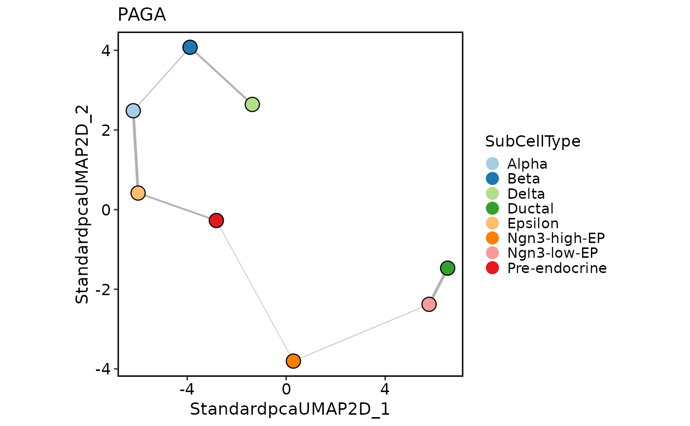
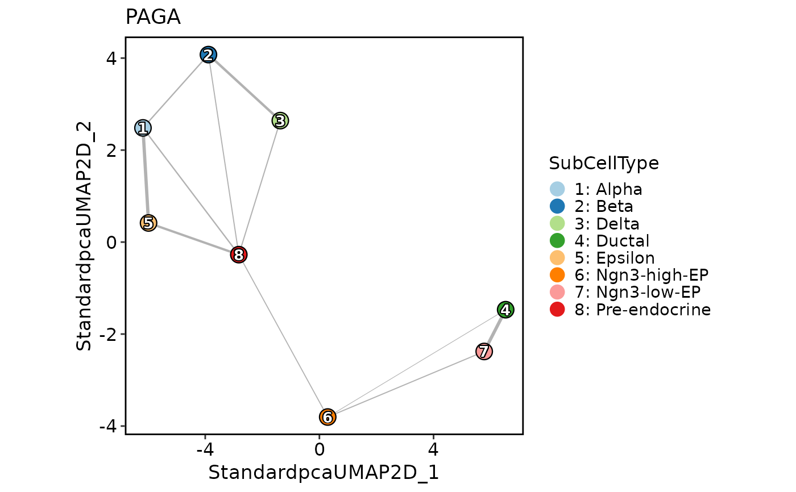
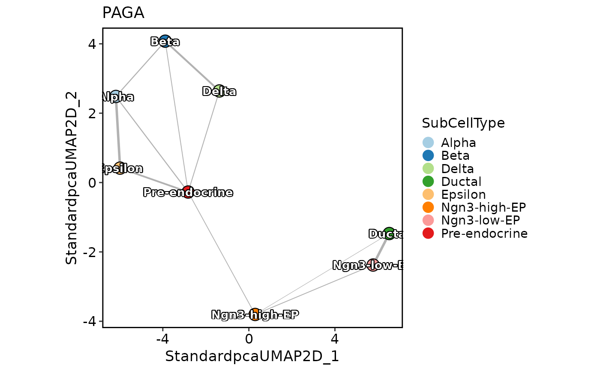

This function generates a PAGA plot based on the given Seurat object and PAGA result.
Usage
PAGAPlot(
srt,
paga = srt@misc$paga,
type = "connectivities",
reduction = NULL,
dims = c(1, 2),
cells = NULL,
show_transition = FALSE,
node_palette = "Paired",
node_palcolor = NULL,
node_size = 4,
node_alpha = 1,
node_highlight = NULL,
node_highlight_color = "red",
label = FALSE,
label.size = 3.5,
label.fg = "white",
label.bg = "black",
label.bg.r = 0.1,
label_insitu = FALSE,
label_repel = FALSE,
label_repulsion = 20,
label_point_size = 1,
label_point_color = "black",
label_segment_color = "black",
edge_threshold = 0.01,
edge_line = c("straight", "curved"),
edge_line_curvature = 0.3,
edge_line_angle = 90,
edge_size = c(0.2, 1),
edge_color = "grey40",
edge_alpha = 0.5,
edge_shorten = 0,
edge_offset = 0,
edge_highlight = NULL,
edge_highlight_color = "red",
transition_threshold = 0.01,
transition_line = c("straight", "curved"),
transition_line_curvature = 0.3,
transition_line_angle = 90,
transition_size = c(0.2, 1),
transition_color = "black",
transition_alpha = 1,
transition_arrow_type = "closed",
transition_arrow_angle = 20,
transition_arrow_length = grid::unit(0.02, "npc"),
transition_shorten = 0.05,
transition_offset = 0,
transition_highlight = NULL,
transition_highlight_color = "red",
aspect.ratio = 1,
title = "PAGA",
subtitle = NULL,
xlab = NULL,
ylab = NULL,
legend.position = "right",
legend.direction = "vertical",
theme_use = "theme_scop",
theme_args = list(),
return_layer = FALSE
)Arguments
- srt
A Seurat object containing a PAGA result.
- paga
The PAGA result from the Seurat object. Defaults to
srt\$misc\$paga.- type
The type of plot to generate. Possible values are "connectivities" (default) and "connectivities_tree".
- reduction
The type of reduction to use for the plot. Defaults to the default reduction in the Seurat object.
- dims
The dimensions of the reduction to use for the plot. Defaults to the first two dimensions.
- cells
The cells to include in the plot. Defaults to all cells.
- show_transition
A logical value indicating whether to display transitions between different cell states. Defaults to
FALSE.- node_palette
The color palette to use for node coloring. Defaults to "Paired".
- node_palcolor
A vector of colors to use for node coloring. Defaults to
NULL.- node_size
The size of the nodes in the plot. Defaults to 4.
- node_alpha
The transparency of the nodes in the plot. Defaults to 1.
- node_highlight
The group(s) to highlight in the plot. Defaults to
NULL.- node_highlight_color
The color to use for highlighting the nodes. Defaults to "red".
- label
A logical value indicating whether to display labels for the nodes. Defaults to
FALSE.- label.size
The size of the labels. Defaults to 3.5.
- label.fg
The color of the label text. Defaults to "white".
- label.bg
The background color of the labels. Defaults to "black".
- label.bg.r
The transparency of the label background color. Defaults to 0.1.
- label_insitu
A logical value indicating whether to use in-situ labeling for the nodes. Defaults to
FALSE.- label_repel
A logical value indicating whether to use repel mode for labeling nodes. Defaults to
FALSE.- label_repulsion
The repulsion factor for repel mode. Defaults to 20.
- label_point_size
The size of the points in the labels. Defaults to 1.
- label_point_color
The color of the points in the labels. Defaults to "black".
- label_segment_color
The color of the lines connecting the points in the labels. Defaults to "black".
- edge_threshold
The threshold for including edges in the plot. Defaults to 0.01.
- edge_line
The type of line to use for the edges. Possible values are "straight" and "curved". Defaults to "straight".
- edge_line_curvature
The curvature factor for curved edges. Defaults to 0.3.
- edge_line_angle
The angle for curved edges. Defaults to 90.
- edge_size
The size range for the edges. Defaults to c(0.2, 1).
- edge_color
The color of the edges. Defaults to "grey40".
- edge_alpha
The transparency of the edges. Defaults to 0.5.
- edge_shorten
The amount to shorten the edges. Defaults to 0.
- edge_offset
The offset for curved edges. Defaults to 0.
- edge_highlight
The group(s) to highlight in the plot. Defaults to
NULL.- edge_highlight_color
The color to use for highlighting the edges. Defaults to "red".
- transition_threshold
The threshold for including transitions in the plot. Defaults to 0.01.
- transition_line
The type of line to use for the transitions. Possible values are "straight" and "curved". Defaults to "straight".
- transition_line_curvature
The curvature factor for curved transitions. Defaults to 0.3.
- transition_line_angle
The angle for curved transitions. Defaults to 90.
- transition_size
The size range for the transitions. Defaults to c(0.2, 1).
- transition_color
The color of the transitions. Defaults to "black".
- transition_alpha
The transparency of the transitions. Defaults to 1.
- transition_arrow_type
The type of arrow to use for the transitions. Possible values are "closed", "open", and "triangle". Defaults to "closed".
- transition_arrow_angle
The angle of the arrow for transitions. Defaults to 20.
- transition_arrow_length
The length of the arrow for transitions. Defaults to unit(0.02, "npc").
- transition_shorten
The amount to shorten the transitions. Defaults to 0.05.
- transition_offset
The offset for curved transitions. Defaults to 0.
- transition_highlight
The group(s) to highlight in the plot. Defaults to
NULL.- transition_highlight_color
The color to use for highlighting the transitions. Defaults to "red".
- aspect.ratio
The aspect ratio of the plot. Defaults to 1.
- title
The title of the plot. Defaults to "PAGA".
- subtitle
The subtitle of the plot. Defaults to
NULL.- xlab
The label for the x-axis. Defaults to
NULL.- ylab
The label for the y-axis. Defaults to
NULL.- legend.position
The position of the legend. Possible values are "right", "left", "bottom", and "top". Defaults to "right".
- legend.direction
The direction of the legend. Possible values are "vertical" and "horizontal". Defaults to "vertical".
- theme_use
The name of the theme to use for the plot. Defaults to "theme_scop".
- theme_args
A list of arguments to pass to the theme function. Defaults to an empty list.
- return_layer
A logical value indicating whether to return the plot as a ggplot2 layer. Defaults to
FALSE.
Examples
PrepareEnv()
#> ℹ [2025-09-09 11:09:01] Preparing scop Python Environment
#> ℹ [2025-09-09 11:09:01] Environment name: scop_env
#> ℹ [2025-09-09 11:09:01] Python version: 3.10-1
#> ℹ [2025-09-09 11:09:01] Number of packages to install: 21
#> ℹ [2025-09-09 11:09:01] Auto-detecting conda...
#> ℹ [2025-09-09 11:09:01] Using existing environment: /usr/share/miniconda/envs/scop_env
#> ℹ [2025-09-09 11:09:01] Checking and installing required packages...
#> ℹ [2025-09-09 11:09:01] Installing conda packages
#> ℹ [2025-09-09 11:09:03] Checking 3 packages in environment: scop_env
#> ℹ [2025-09-09 11:09:03] Retrieving package list for environment: scop_env
#> ℹ [2025-09-09 11:09:05] Found 194 packages installed
#> ✔ [2025-09-09 11:09:05] leidenalg 0.10.2
#> ✔ [2025-09-09 11:09:05] tbb 2022.2.0
#> ✔ [2025-09-09 11:09:05] python-igraph 0.11.9
#> ℹ [2025-09-09 11:09:05] Installing pip packages
#> ℹ [2025-09-09 11:09:07] Checking 18 packages in environment: scop_env
#> ℹ [2025-09-09 11:09:07] Retrieving package list for environment: scop_env
#> ℹ [2025-09-09 11:09:10] Found 194 packages installed
#> ✔ [2025-09-09 11:09:10] matplotlib 3.10.3
#> ✔ [2025-09-09 11:09:10] numba 0.59.1
#> ✔ [2025-09-09 11:09:10] llvmlite 0.42.0
#> ✔ [2025-09-09 11:09:10] numpy 1.26.4
#> ✔ [2025-09-09 11:09:10] palantir 1.4.1
#> ✔ [2025-09-09 11:09:10] pandas 2.0.3
#> ✔ [2025-09-09 11:09:10] scanpy 1.11.3
#> ✔ [2025-09-09 11:09:10] scikit-learn 1.7.0
#> ✔ [2025-09-09 11:09:10] scipy 1.15.3
#> ✔ [2025-09-09 11:09:10] scvelo 0.3.3
#> ✔ [2025-09-09 11:09:10] wot 1.0.8.post2
#> ✔ [2025-09-09 11:09:10] trimap 1.1.4
#> ✔ [2025-09-09 11:09:10] pacmap 0.8.0
#> ✔ [2025-09-09 11:09:10] phate 1.0.11
#> ✔ [2025-09-09 11:09:10] bbknn 1.6.0
#> ✔ [2025-09-09 11:09:10] scanorama 1.7.4
#> ✔ [2025-09-09 11:09:10] scvi-tools 1.2.1
#> ✔ [2025-09-09 11:09:10] cellrank 2.0.7
#> ✔ [2025-09-09 11:09:12] Python Environment Ready
#> conda environment:
#> conda: /usr/share/miniconda/bin/conda
#> environment: /usr/share/miniconda/envs/scop_env
#> python config:
#> python: /usr/share/miniconda/envs/scop_env/bin/python3.10
#> libpython: /usr/share/miniconda/envs/scop_env/lib/libpython3.10.so
#> pythonhome: /usr/share/miniconda/envs/scop_env:/usr/share/miniconda/envs/scop_env
#> version: 3.10.1 | packaged by conda-forge | (main, Dec 22 2021, 01:39:36) [GCC 9.4.0]
#> numpy: /usr/share/miniconda/envs/scop_env/lib/python3.10/site-packages/numpy
#> numpy_version: 1.26.4
#>
#> NOTE: Python version was forced by use_python() function
data(pancreas_sub)
pancreas_sub <- standard_scop(pancreas_sub)
#> ℹ [2025-09-09 11:09:13] Start standard scop workflow...
#> ℹ [2025-09-09 11:09:13] Checking a list of <Seurat> objects...
#> ! [2025-09-09 11:09:14] Data 1/1 of the `srt_list` is "unknown"
#> ℹ [2025-09-09 11:09:14] Perform `NormalizeData()` with `normalization.method = 'LogNormalize'` on the data 1/1 of the `srt_list`...
#> ℹ [2025-09-09 11:09:15] Perform `Seurat::FindVariableFeatures()` on the data 1/1 of the `srt_list`...
#> ℹ [2025-09-09 11:09:16] Use the separate HVF from srt_list
#> ℹ [2025-09-09 11:09:16] Number of available HVF: 2000
#> ℹ [2025-09-09 11:09:16] Finished check
#> ℹ [2025-09-09 11:09:17] Perform `Seurat::ScaleData()` on the data...
#> Warning: Different features in new layer data than already exists for scale.data
#> ℹ [2025-09-09 11:09:17] Perform pca linear dimension reduction on the data...
#> StandardPC_ 1
#> Positive: Aplp1, Cpe, Gnas, Fam183b, Map1b, Hmgn3, Pcsk1n, Chga, Tuba1a, Bex2
#> Syt13, Isl1, 1700086L19Rik, Pax6, Chgb, Scgn, Rbp4, Scg3, Gch1, Camk2n1
#> Cryba2, Pcsk2, Pyy, Tspan7, Mafb, Hist3h2ba, Dbpht2, Abcc8, Rap1b, Slc38a5
#> Negative: Spp1, Anxa2, Sparc, Dbi, 1700011H14Rik, Wfdc2, Gsta3, Adamts1, Clu, Mgst1
#> Bicc1, Ldha, Vim, Cldn3, Cyr61, Rps2, Mt1, Ptn, Phgdh, Nudt19
#> Smtnl2, Smco4, Habp2, Mt2, Col18a1, Rpl12, Galk1, Cldn10, Acot1, Ccnd1
#> StandardPC_ 2
#> Positive: Rbp4, Tagln2, Tuba1b, Fkbp2, Pyy, Pcsk2, Iapp, Tmem27, Meis2, Tubb4b
#> Pcsk1n, Dbpht2, Rap1b, Dynll1, Tubb2a, Sdf2l1, Scgn, 1700086L19Rik, Scg2, Abcc8
#> Atp1b1, Hspa5, Fam183b, Papss2, Slc38a5, Scg3, Mageh1, Tspan7, Ppp1r1a, Ociad2
#> Negative: Neurog3, Btbd17, Gadd45a, Ppp1r14a, Neurod2, Sox4, Smarcd2, Mdk, Pax4, Btg2
#> Sult2b1, Hes6, Grasp, Igfbpl1, Gpx2, Cbfa2t3, Foxa3, Shf, Mfng, Tmsb4x
#> Amotl2, Gdpd1, Cdc14b, Epb42, Rcor2, Cotl1, Upk3bl, Rbfox3, Cldn6, Cer1
#> StandardPC_ 3
#> Positive: Nusap1, Top2a, Birc5, Aurkb, Cdca8, Pbk, Mki67, Tpx2, Plk1, Ccnb1
#> 2810417H13Rik, Incenp, Cenpf, Ccna2, Prc1, Racgap1, Cdk1, Aurka, Cdca3, Hmmr
#> Spc24, Kif23, Sgol1, Cenpe, Cdc20, Hist1h1b, Cdca2, Mxd3, Kif22, Ska1
#> Negative: Anxa5, Pdzk1ip1, Acot1, Tpm1, Anxa2, Dcdc2a, Capg, Sparc, Ttr, Pamr1
#> Clu, Cxcl12, Ndrg2, Hnf1aos1, Gas6, Gsta3, Krt18, Ces1d, Atp1b1, Muc1
#> Hhex, Acadm, Spp1, Enpp2, Bcl2l14, Sat1, Smtnl2, 1700011H14Rik, Tgm2, Fam159a
#> StandardPC_ 4
#> Positive: Glud1, Tm4sf4, Akr1c19, Cldn4, Runx1t1, Fev, Pou3f4, Gm43861, Pgrmc1, Arx
#> Cd200, Lrpprc, Hmgn3, Ppp1r14c, Pam, Etv1, Tsc22d1, Slc25a5, Akap17b, Pgf
#> Fam43a, Emb, Jun, Krt8, Dnajc12, Mid1ip1, Ids, Rgs17, Uchl1, Alcam
#> Negative: Ins2, Ins1, Ppp1r1a, Nnat, Calr, Sytl4, Sdf2l1, Iapp, Pdia6, Mapt
#> G6pc2, C2cd4b, Npy, Gng12, P2ry1, Ero1lb, Adra2a, Papss2, Arhgap36, Fam151a
#> Dlk1, Creld2, Gip, Tmem215, Gm27033, Cntfr, Prss53, C2cd4a, Lyve1, Ociad2
#> StandardPC_ 5
#> Positive: Pdx1, Nkx6-1, Npepl1, Cldn4, Cryba2, Fev, Jun, Chgb, Gng12, Adra2a
#> Mnx1, Sytl4, Pdk3, Gm27033, Nnat, Chga, Ins2, 1110012L19Rik, Enho, Krt7
#> Mlxipl, Tmsb10, Flrt1, Pax4, Tubb3, Prrg2, Gars, Frzb, BC023829, Gm2694
#> Negative: Irx2, Irx1, Gcg, Ctxn2, Tmem27, Ctsz, Tmsb15l, Nap1l5, Pou6f2, Gria2
#> Ghrl, Peg10, Smarca1, Arx, Lrpap1, Rgs4, Ttr, Gast, Tmsb15b2, Serpina1b
#> Slc16a10, Wnk3, Ly6e, Auts2, Sct, Arg1, Dusp10, Sphkap, Dock11, Edn3
#> ℹ [2025-09-09 11:09:18] Perform `Seurat::FindClusters()` with louvain and `cluster_resolution` = 0.6 on the data...
#> ℹ [2025-09-09 11:09:18] Reorder clusters...
#> ! [2025-09-09 11:09:18] Using `Seurat::AggregateExpression()` to calculate pseudo-bulk data for <Assay5>
#> ℹ [2025-09-09 11:09:18] Perform umap nonlinear dimension reduction on the data...
#> ℹ [2025-09-09 11:09:18] Non-linear dimensionality reduction (umap) using (Standardpca) dims (1-50) as input
#> ℹ [2025-09-09 11:09:22] Non-linear dimensionality reduction (umap) using (Standardpca) dims (1-50) as input
#> ✔ [2025-09-09 11:09:26] Run scop standard workflow done
pancreas_sub <- RunPAGA(
pancreas_sub,
group_by = "SubCellType",
linear_reduction = "PCA",
nonlinear_reduction = "UMAP",
return_seurat = TRUE
)
#> ℹ [2025-09-09 11:09:27] Checking 2 packages in environment: scop_env
#> ℹ [2025-09-09 11:09:28] Retrieving package list for environment: scop_env
#> ℹ [2025-09-09 11:09:30] Found 194 packages installed
#> ✔ [2025-09-09 11:09:30] scanpy version: 1.11.3
#> ✔ [2025-09-09 11:09:30] numpy version: 1.26.4
#> ℹ [2025-09-09 11:09:30] Converting <Seurat> object to <AnnData> object...
#> ! [2025-09-09 11:09:30] "misc" slot is not converted
#> ! [2025-09-09 11:09:30] "tools" slot is not converted
#> ✔ [2025-09-09 11:09:30] Convert <Seurat> object to <AnnData> object completed
#> ℹ [2025-09-09 11:09:30] Running PAGA analysis...
#> ✔ [2025-09-09 11:09:32] PAGA analysis completed
#> ℹ [2025-09-09 11:09:32] Converting <AnnData> object to <Seurat> object...
#> ✔ [2025-09-09 11:09:33] Convert <AnnData> object to <Seurat> object completed
PAGAPlot(pancreas_sub)
PAGAPlot(
pancreas_sub,
type = "connectivities_tree"
)

PAGAPlot(
pancreas_sub,
reduction = "PCA"
)
PAGAPlot(
pancreas_sub,
reduction = "PAGAUMAP2D"
)
PAGAPlot(
pancreas_sub,
edge_shorten = 0.05
)
PAGAPlot(
pancreas_sub,
label = TRUE
)

PAGAPlot(
pancreas_sub,
label = TRUE,
label_insitu = TRUE
)

PAGAPlot(
pancreas_sub,
label = TRUE,
label_insitu = TRUE,
label_repel = TRUE
)
 PAGAPlot(
pancreas_sub,
edge_line = "curved"
)
PAGAPlot(
pancreas_sub,
node_size = "GroupSize"
)
PAGAPlot(
pancreas_sub,
node_highlight = "Ductal"
)
PAGAPlot(
pancreas_sub,
edge_highlight = paste(
"Pre-endocrine",
levels(pancreas_sub$SubCellType),
sep = "-"
)
)
PAGAPlot(
pancreas_sub,
edge_line = "curved"
)
PAGAPlot(
pancreas_sub,
node_size = "GroupSize"
)
PAGAPlot(
pancreas_sub,
node_highlight = "Ductal"
)
PAGAPlot(
pancreas_sub,
edge_highlight = paste(
"Pre-endocrine",
levels(pancreas_sub$SubCellType),
sep = "-"
)
)
 pancreas_sub <- RunSCVELO(
pancreas_sub,
group_by = "SubCellType",
linear_reduction = "PCA",
nonlinear_reduction = "UMAP",
return_seurat = TRUE
)
#> ℹ [2025-09-09 11:09:36] Checking 1 packages in environment: scop_env
#> ℹ [2025-09-09 11:09:37] Retrieving package list for environment: scop_env
#> ℹ [2025-09-09 11:09:39] Found 194 packages installed
#> ✔ [2025-09-09 11:09:39] scvelo version: 0.3.3
#> ℹ [2025-09-09 11:09:40] Checking 2 packages in environment: scop_env
#> ℹ [2025-09-09 11:09:41] Retrieving package list for environment: scop_env
#> ℹ [2025-09-09 11:09:43] Found 194 packages installed
#> ✔ [2025-09-09 11:09:43] scanpy version: 1.11.3
#> ✔ [2025-09-09 11:09:43] numpy version: 1.26.4
#> ℹ [2025-09-09 11:09:43] Converting <Seurat> object to <AnnData> object...
#> ! [2025-09-09 11:09:43] "misc" slot is not converted
#> ! [2025-09-09 11:09:44] "tools" slot is not converted
#> ✔ [2025-09-09 11:09:44] Convert <Seurat> object to <AnnData> object completed
#> ℹ [2025-09-09 11:09:44] Running scVelo analysis...
#> Error in py_call_impl(callable, call_args$unnamed, call_args$named): ValueError: StandardpcaUMAP2D does not have enough Dimensions. Provide a Representation with equal or more dimensions than`n_pcs` or lower `n_pcs`
#> Run `reticulate::py_last_error()` for details.
PAGAPlot(
pancreas_sub,
show_transition = TRUE
)
#> ! [2025-09-09 11:09:44] Transitions_confidence need to be calculated first.
pancreas_sub <- RunSCVELO(
pancreas_sub,
group_by = "SubCellType",
linear_reduction = "PCA",
nonlinear_reduction = "UMAP",
return_seurat = TRUE
)
#> ℹ [2025-09-09 11:09:36] Checking 1 packages in environment: scop_env
#> ℹ [2025-09-09 11:09:37] Retrieving package list for environment: scop_env
#> ℹ [2025-09-09 11:09:39] Found 194 packages installed
#> ✔ [2025-09-09 11:09:39] scvelo version: 0.3.3
#> ℹ [2025-09-09 11:09:40] Checking 2 packages in environment: scop_env
#> ℹ [2025-09-09 11:09:41] Retrieving package list for environment: scop_env
#> ℹ [2025-09-09 11:09:43] Found 194 packages installed
#> ✔ [2025-09-09 11:09:43] scanpy version: 1.11.3
#> ✔ [2025-09-09 11:09:43] numpy version: 1.26.4
#> ℹ [2025-09-09 11:09:43] Converting <Seurat> object to <AnnData> object...
#> ! [2025-09-09 11:09:43] "misc" slot is not converted
#> ! [2025-09-09 11:09:44] "tools" slot is not converted
#> ✔ [2025-09-09 11:09:44] Convert <Seurat> object to <AnnData> object completed
#> ℹ [2025-09-09 11:09:44] Running scVelo analysis...
#> Error in py_call_impl(callable, call_args$unnamed, call_args$named): ValueError: StandardpcaUMAP2D does not have enough Dimensions. Provide a Representation with equal or more dimensions than`n_pcs` or lower `n_pcs`
#> Run `reticulate::py_last_error()` for details.
PAGAPlot(
pancreas_sub,
show_transition = TRUE
)
#> ! [2025-09-09 11:09:44] Transitions_confidence need to be calculated first.
 PAGAPlot(
pancreas_sub,
show_transition = TRUE,
transition_offset = 0.02
)
#> ! [2025-09-09 11:09:44] Transitions_confidence need to be calculated first.
PAGAPlot(
pancreas_sub,
show_transition = TRUE,
transition_offset = 0.02
)
#> ! [2025-09-09 11:09:44] Transitions_confidence need to be calculated first.